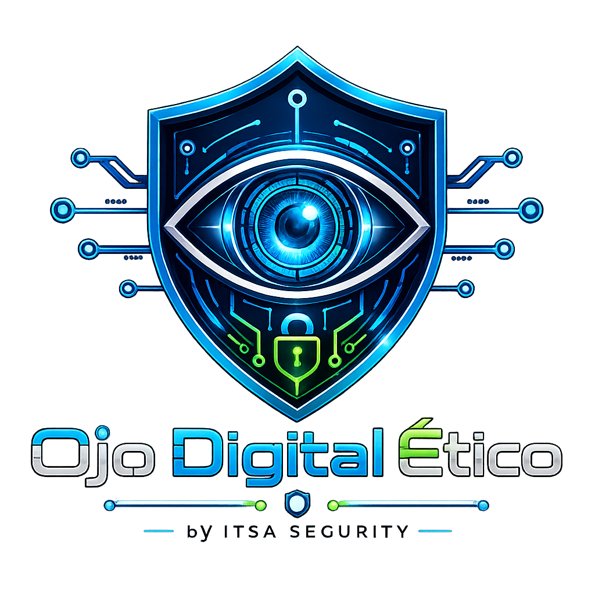

Objetivo principal
Unificar telemetría, alertas, cámaras autorizadas, servidores, redes, sensores e integraciones científicas en un panel claro, auditable y seguro.


Monitoreo inteligente autorizado
Sistema inteligente de monitoreo autorizado para empresas, instituciones y hogares conectados.
Centralizamos información de servidores, redes, sensores, cámaras autorizadas y dispositivos IoT para detectar fallos, amenazas y eventos importantes en tiempo real, siempre bajo consentimiento, trazabilidad y buenas prácticas de ciberseguridad.
Concepto del sistema
Ojo Digital Ético se plantea como una plataforma centralizada para observar activos propios o formalmente autorizados, correlacionar eventos y ayudar a tomar decisiones sin invadir privacidad ni evadir controles de seguridad.
Unificar telemetría, alertas, cámaras autorizadas, servidores, redes, sensores e integraciones científicas en un panel claro, auditable y seguro.
Monitoreo de infraestructura tecnológica, continuidad operativa, eventos de seguridad, disponibilidad de servicios y activos de una organización.
Integración de estaciones meteorológicas, sensores ambientales, telescopios, laboratorios y fuentes de observación científica autorizadas.
Control transparente de cámaras propias, alarmas, sensores, cerraduras inteligentes y sistemas domésticos administrados por su titular.
Monitoreo defensivo, autorizado y trazable para activos propios o formalmente permitidos.
Supervisión de sensores, cámaras institucionales, sistemas internos y dispositivos IoT autorizados.
Integración de estaciones meteorológicas, sensores ambientales, telescopios y fuentes científicas para análisis en tiempo real.
Monitoreo de servidores, redes, APIs, bases de datos, aplicaciones y amenazas de ciberseguridad.
Control autorizado de cámaras propias, alarmas, cerraduras inteligentes y sensores domésticos.
Dashboard demo visual
Vista simulada para representar métricas operativas, eventos recientes y estado general del entorno autorizado.
El sistema se diseña para proteger, no para invadir. Toda implementación requiere autorización expresa y alcance documentado.
Solo se monitorean dispositivos autorizados.
Todo acceso requiere credenciales válidas.
Todas las acciones quedan registradas en auditoría.
Los datos se cifran en tránsito y en reposo.
No se permite vigilancia secreta ni acceso no autorizado.
El usuario conserva control sobre sus datos y dispositivos.
Arquitectura recomendada
Stack sugerido según alcance, presupuesto, seguridad requerida e integración con infraestructura existente.
Arquitectura técnica
La solución puede implementarse como microservicios o módulos desacoplados para separar identidad, autorización, telemetría, alertas, auditoría, analítica y reportes.
Sensores IoT, cámaras propias, servidores, APIs internas, estaciones científicas, integraciones cloud y agentes instalados con permiso explícito.
API Gateway, MQTT Broker, REST, WebSockets, validación de firma, rate limiting, normalización de eventos y rechazo de fuentes no registradas.
Autenticación, RBAC, consentimiento, catálogo de dispositivos, motor de alertas, detección de anomalías, bitácora de auditoría y reportes.
PostgreSQL para entidades, almacenamiento cifrado para evidencias, series temporales para telemetría y políticas de retención por tipo de dato.
Dashboard responsivo con mapa, nodos conectados, cámaras autorizadas, tarjetas de estado, gráficas, alertas, filtros y vistas por rol.
Logs, métricas, monitoreo de errores, trazas, alertas internas y reportes para auditar disponibilidad, seguridad y uso del sistema.
Flujo de usuario
Roles y permisos
Cada acción se limita por rol, alcance del dispositivo, consentimiento vigente y política de privacidad configurada.
| Rol | Permisos principales | Restricciones |
|---|---|---|
| Administrador | Gestiona usuarios, dispositivos, integraciones, políticas, alertas y reportes. | No puede omitir consentimiento ni borrar auditoría crítica. |
| Operador | Monitorea paneles, atiende alertas y registra acciones operativas. | No administra credenciales ni cambia políticas de privacidad. |
| Auditor | Consulta logs, permisos, reportes, cambios de configuración y evidencias. | Acceso de solo lectura a datos necesarios para auditoría. |
| Usuario personal | Controla únicamente sus dispositivos propios y consentimientos domésticos. | No accede a dispositivos de terceros ni datos compartidos sin permiso. |
| Científico | Integra fuentes autorizadas, sensores ambientales y datasets del proyecto. | No accede a información personal fuera del alcance del estudio. |
Modelo de datos sugerido
Identidad, correo, proveedor OAuth, MFA, estado y fecha de última actividad.
Roles, permisos granulares, alcance por organización, proyecto o dispositivo.
Tipo, propietario, ubicación, fuente, credenciales cifradas, estado y verificación.
Autorización, finalidad, vigencia, datos permitidos, responsable y revocación.
Lecturas de sensores, servidor, red, aplicación, cámara autorizada o API registrada.
Criticidad, regla, origen, estado, asignación, tiempo de respuesta y resolución.
Acción, usuario, IP, rol, recurso, resultado, fecha, trazabilidad y correlación.
Reportes programados, exportaciones, indicadores, retención y destinatarios autorizados.
APIs necesarias
POST /api/auth/loginInicio de sesión con MFA y emisión de JWT.
POST /api/consentsRegistro de consentimiento explícito y alcance autorizado.
POST /api/devices/registerAlta y verificación de dispositivos propios o institucionales.
GET /api/telemetryConsulta de telemetría filtrada por permisos.
WS /realtime/eventsCanal WebSocket para eventos y alertas en vivo.
POST /api/alerts/rulesReglas defensivas por umbral, patrón o anomalía.
GET /api/audit-logsConsulta auditada de acciones del sistema.
GET /api/reports/exportDescarga de reportes autorizados en PDF o CSV.
ojo-digital-etico/
apps/web-dashboard/
services/auth-service/
services/device-registry/
services/telemetry-ingestion/
services/alert-engine/
services/audit-service/
services/report-service/
infrastructure/docker/
docs/privacy-and-consent/Recomendaciones de implementación
Autenticación, roles, consentimiento, registro de dispositivos, dashboard básico y auditoría inmutable.
MQTT, WebSockets, reglas de alertas, criticidad, notificaciones y reportes operativos.
Detección de anomalías, patrones de eventos, priorización de riesgos y recomendaciones explicables.
Retención de datos, auditorías, exportación, revisión legal y políticas transparentes por cliente.
Ojo Digital Ético debe implementarse únicamente con autorización documentada, finalidad legítima y permisos verificables. No debe usarse para vigilancia oculta, extracción de datos privados, rastreo de personas sin consentimiento, evasión de controles de seguridad ni acceso a dispositivos de terceros. Antes de operar en producción se recomienda revisión legal, política de privacidad, contratos de tratamiento de datos y procedimientos de revocación de consentimiento.
ITSA SEGURITY puede ayudarte a definir alcance, permisos, arquitectura, seguridad, sensores y paneles de control bajo un enfoque legal, defensivo y autorizado.